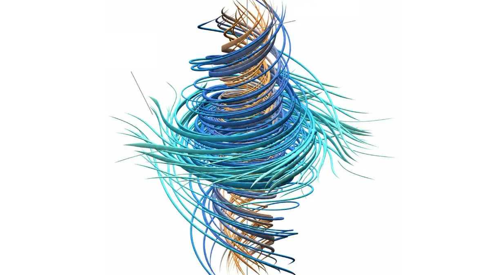

Le mardi 8 septembre 2026, OpenAI a annoncé qu'un système d'intelligence artificielle interne avait produit une preuve pour une variante du problème d'existence et de régularité des équations de Navier-Stokes, l'un des sept « problèmes du prix du millénaire » posés en 2000 par le Clay Mathematics Institute, chacun doté d'une récompense d'un million de dollars. Si la preuve, forte de 165 pages et formalisée dans le langage de vérification Lean, impressionne une partie de la communauté mathématique, son annonce a aussitôt été éclipsée par une dispute sur la paternité des travaux, opposant OpenAI au mathématicien Tristan Buckmaster et à son collaborateur Levent Alpöge, chercheur chez Anthropic.
Formulées au XIXe siècle, les équations de Navier-Stokes décrivent le mouvement des fluides visqueux et sont utilisées quotidiennement pour modéliser la météorologie, l'aérodynamique ou les courants océaniques. La question posée par le Clay Mathematics Institute en 2000 — l'existence et la régularité de leurs solutions — demande si un mouvement fluide tridimensionnel qui démarre de façon parfaitement lisse peut, sous l'effet de ces équations, développer une singularité : un point où la vitesse du fluide deviendrait infinie en un temps fini, malgré la présence de la viscosité qui tend normalement à lisser le mouvement. Cette question reste sans réponse définitive depuis environ 90 ans.
Le problème fait partie des sept « problèmes du prix du millénaire », un ensemble de questions mathématiques majeures identifiées par le Clay Mathematics Institute, chacune assortie d'une récompense d'un million de dollars. À ce jour, un seul de ces sept problèmes a été résolu : la conjecture de Poincaré, démontrée par le mathématicien russe Grigori Perelman en 2003, qui avait ensuite refusé la récompense.
Selon l'entreprise, un modèle interne, présenté comme nettement plus capable que son modèle public GPT-6 Astra, a mobilisé jusqu'à 10 000 agents d'intelligence artificielle travaillant en parallèle pendant environ 88 heures, pour un coût de calcul se chiffrant en plusieurs millions de dollars. Le système aurait établi qu'un tourbillon peut se resserrer et accélérer indéfiniment — un phénomène que les mathématiciens appellent « explosion en temps fini » — tout en gardant une énergie totale bornée, ce qui constituerait la singularité recherchée.
OpenAI précise toutefois que sa preuve porte sur des versions « forcées » du problème, c'est-à-dire intégrant un terme de force extérieure lisse — des variantes qui font formellement partie de l'énoncé officiel du Clay Mathematics Institute, mais que de nombreux spécialistes ont l'habitude de laisser de côté dans leurs travaux. L'institut n'a pas certifié le résultat, aucune relecture par les pairs n'a encore eu lieu, et OpenAI a indiqué ne pas avoir l'intention de réclamer le million de dollars promis.
Le Clay Mathematics Institute annonce les sept problèmes du prix du millénaire, dont celui de Navier-Stokes.
Grigori Perelman démontre la conjecture de Poincaré, seul problème du millénaire résolu jusqu'ici.
Tristan Buckmaster (NYU) et Levent Alpöge (Anthropic) démontrent, avec l'aide de l'IA, que les équations d'Euler — la version sans viscosité de Navier-Stokes — peuvent « exploser », en s'appuyant sur la méthode de « forçage » développée par Diego Córdoba et Luis Martínez-Zoroa.
OpenAI publie sa preuve revendiquée pour le problème de Navier-Stokes, quelques jours après avoir eu connaissance des travaux non publiés de Buckmaster et Alpöge.
Selon Tristan Buckmaster, OpenAI aurait eu connaissance, dans la semaine suivant le 15 août, de ses travaux non publiés menés avec Levent Alpöge sur les équations d'Euler, et se serait alors lancée dans un effort accéléré pour étendre la démonstration à l'ensemble du problème de Navier-Stokes. Buckmaster affirme que Sébastien Bubeck, qui dirige l'équipe de mathématiques d'OpenAI, lui aurait proposé par téléphone deux options : publier seul les résultats sur Euler pendant qu'OpenAI publierait le lendemain sa propre preuve de Navier-Stokes, ou bien obtenir la signature exclusive de la preuve complète à condition que le nom d'Alpöge soit retiré des auteurs. Buckmaster affirme avoir refusé les deux propositions, notamment parce qu'il s'interrogeait sur ce que le système d'OpenAI avait pu « voir » de son travail, en partie validé via l'outil Codex de l'entreprise.
« C'est un moment Deep Blue contre Kasparov. »
— Tristan Buckmaster, mathématicien à l'université de New York (NYU)OpenAI, par la voix de Sébastien Bubeck, a publiquement rejeté ces accusations, affirmant que son système avait résolu le sous-problème des équations d'Euler de manière indépendante, par une méthode différente de celle de Buckmaster et Alpöge — tout en reconnaissant que la preuve finale sur Navier-Stokes reposait sur une approche de « forçage » similaire à la leur, celle initialement développée par les mathématiciens Diego Córdoba et Luis Martínez-Zoroa. Dans son propre article, OpenAI a admis ne pas pouvoir totalement exclure que des données rendues anonymes, issues de l'usage de ses outils par les deux chercheurs, aient pu contribuer à l'entraînement de ses modèles.
Que la preuve d'OpenAI résiste ou non à l'examen des pairs, l'épisode marque une étape dans l'histoire des mathématiques : c'est la première fois qu'un système d'intelligence artificielle revendique une contribution déterminante à la résolution d'un problème du prix du millénaire, à peine trois semaines après que deux chercheurs humains, assistés par l'IA, avaient ouvert la voie sur un problème voisin. La dispute sur la paternité des travaux illustre une tension nouvelle : quand des laboratoires rivaux disposent de systèmes capables d'ingérer et de prolonger des idées mathématiques en quelques jours, la frontière entre inspiration légitime et appropriation devient difficile à tracer, et la communauté scientifique n'a pas encore de règles établies pour la fixer.